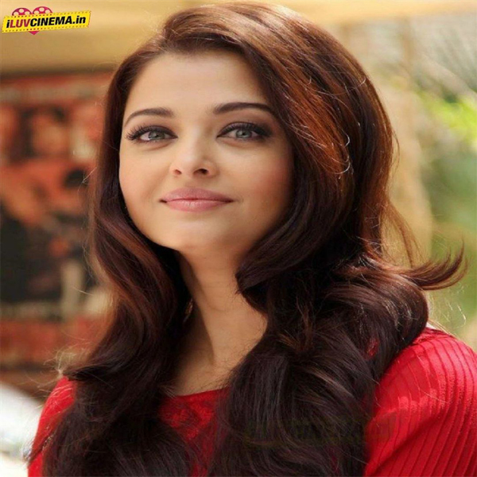
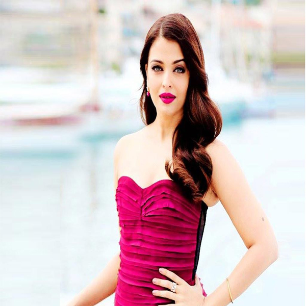

Photoshop Tutor |
This video contains the detailed explanation of Lasso Tool and Magic Wand Tool of Adobe Photoshop 7.0. Viewing this video will help you to understand about both of these selection tools.If you like my video then please do subscribe my channel.
This video contains the detailed explanation of Crop Tool, Healing Brush Tool and History Brush Tool of Adobe Photoshop 7.0. Viewing this video will help you to understand about all the tools explained tools. If you like my video then please do subscribe my channel.
This video contains the detailed explanation of Sharpen, Blur, Smudge and Filling tools of Adobe Photoshop 7.0. Viewing this video will help you to understand all about these tools in Adobe Photoshop 7.0
If you like my video then please do subscribe my channel.
This video contains the detailed explanation of Dodge, Burn, Smudge and Pen tool of Adobe Photoshop 7.0. Viewing this video will help you to understand all about these tools in Adobe Photoshop 7.0.
If you like my video then please do subscribe my channel.
This video contains the detailed explanation of how to make passport size photos in Adobe Photoshop 7.0. Viewing this video will help you to understand all about how to make passport size photos in Adobe Photoshop 7.0.
If you like my video then please do subscribe my channel.
This video contains the detailed explanation of how to make mirror effect in Adobe Photoshop 7.0. Viewing this video will help you to understand all about how to make mirror effect in Adobe Photoshop 7.0.
If you like my video then please do subscribe my channel.
This video contains the detailed explanation of how to do Face Retouching in Adobe Photoshop 7.0. Viewing this video will help you to understand all about how to do Face Retouching in Adobe Photoshop 7.0.
If you like my video then please do subscribe my channel.
This video contains the detailed explanation of how to give Fire effect in Adobe Photoshop 7.0. Viewing this video will help you to understand all about how to make fire effect on text in Adobe Photoshop 7.0.
If you like my video then please do subscribe my channel.